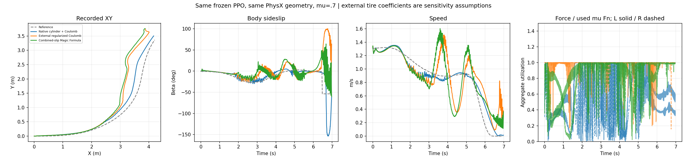
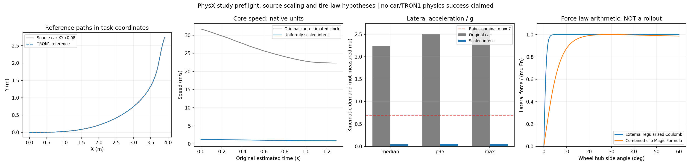

Measured first-phase comparison, 24 October 2026. Twenty diagnostic episodes completed: six single-wheel tests, six frozen-PPO TRON1 episodes, six rigid-axle car episodes and two native Vehicle SDK episodes. This does not establish task success or real-tire accuracy.
Main result: changing the tire curve alone did not improve this frozen policy. External force coupling is a substantial confound, and the car source plant is not identified. Human-motion priors remain a testable coordination hypothesis.
The three400Hz arms share exactly the same initial mechanical state. Instrumenting native friction reproduced the previous PhysX trajectory byte for byte. The external arms disable native wheel tangential friction, retain native normal contact, and apply force plus COM moment using the preceding physical sample's load. Other body contacts retain their original material.
| Law | Physics Hz | Core XY RMSE m | Beta RMSE deg | Core speed/reference | Any-wheel support |
|---|---|---|---|---|---|
| native_coulomb | 400 | 0.154 | 5.34 | 92.7% | 95.9% |
| native_coulomb | 800 | 0.145 | 4.39 | 93.3% | 93.8% |
| external_coulomb_regularized | 400 | 0.304 | 13.48 | 99.7% | 95.2% |
| external_coulomb_regularized | 800 | 0.193 | 12.23 | 91.5% | 94.4% |
| combined_slip_magic_formula | 400 | 0.357 | 15.35 | 101.8% | 95.7% |
| combined_slip_magic_formula | 800 | 0.323 | 14.16 | 99.9% | 93.1% |
Core:1.44–4s. Support:0.02–6.96s, max(FzL,FzR)>5N, with single-wheel support allowed. The actor remains50Hz and was trained at400Hz. The800Hz rows are evaluation-only numerical refinement. Two resolutions do not prove convergence. No arm meets the original continuous-support requirement.
Fixed world XY bounds for every frame and panel. Blue: body; orange: velocity; opaque red/purple: wheel planes. Green dots indicate support at the display sample; all eight physical samples remain in the raw data. Reference contacts are unobserved.

The native-to-external Coulomb difference combines regularization, load delay and force application. External Coulomb-to-Magic-Formula is the cleaner curve-shape comparison within that same coupling. Current-load and lagged-load force ratios are stored separately. Aggregate utilization is not pointwise friction-cone identification.
The reference is a modified CARLA0.9.5 simulated trajectory, not a real-car measurement. Original timestamps, individual wheel orientations/RPM and loads are absent. The clock is reconstructed. Four-wheel mass, dimensions, steering and torque assumptions are explicit in the protocol. Identical normalized source controls and torque targets were verified across the six rigid-axle arms.
Original core speed:22.3–31.7m/s; original body beta:-26.7–-8.1deg. These source values do not identify tires or capture friction.
| Car model/law | Mu | Core XY RMSE m | Beta RMSE deg | Speed/reference | Any-wheel support | Max tilt deg |
|---|---|---|---|---|---|---|
| native_coulomb | 0.7 | 11.51 | 21.35 | 120.8% | 25.8% | 5.8 |
| external_coulomb_regularized | 0.7 | 14.88 | 20.41 | 114.1% | 28.7% | 2.0 |
| combined_slip_magic_formula | 0.7 | 14.75 | 22.54 | 114.3% | 17.3% | 2.9 |
| native_coulomb | 3.5 | 18.95 | 106.46 | 97.2% | 0.6% | 179.7 |
| external_coulomb_regularized | 3.5 | 14.95 | 102.38 | 74.8% | 0.4% | 93.7 |
| combined_slip_magic_formula | 3.5 | 18.51 | 99.50 | 55.2% | 1.2% | 85.4 |
| Vehicle SDK | 0.7 | 16.35 | 20.12 | 143.5% | 100.0% | 0.9 |
| Vehicle SDK | 3.5 | 7.46 | 10.87 | 125.9% | 49.3% | 171.4 |
Rigid-axle outcomes include contact losses and rollover. Vehicle SDK adds suspension/road queries and its default tire model, and uses CPU PhysX rather than the GPU articulation path. It is a component-model diagnostic, not a curve-only ablation or exact CARLA reproduction. Atmu0.7 it maintains support but misses the source turn. Atmu3.5 it rolls over, so lower XY/beta error is not task success.
Panels: original source; rigid cylinder/Coulomb; rigid cylinder/external Magic Formula; native Vehicle suspension/tire model. Source wheel orientations are not invented. Vehicle wheel centers use measured root, steering and suspension jounce. All panels and bothmu conditions share fixed XY bounds.
The Vehicle SDK default tire is not Pacejka. Its filtered tire load is not exposed by the installed wheel-state binding. Tire force divided by raw suspension-up force is a diagnostic proxy, not actual friction-cone utilization.

Space0.08 and time2 preserve geometric beta but scale velocity by0.04 and acceleration by0.02. The source core's estimated lateral acceleration/g median is2.24, versus0.0447 after uniform scaling. Kinematic intent therefore does not preserve the friction budget or physical leaning requirement. These are estimated-clock kinematic derivatives, not measured tire forces.
Learning Roller-Skating Motions of Humanoid Robots Based on Adversarial Motion Priors uses a passive-wheel humanoid, nine cylinder slices and GMR-derived AMP priors. Its reported forward tests do not establish high-speed large-beta turning. The wheel geometry lesson is relevant; cylinder slicing does not identify a nonlinear tire law.
Our assessment: use human data as a posture/load-transfer/support-timing prior only after validating contact and acceleration compatibility. TRON1's wheel motors remain active; wheel spin should not be an imitation target. Test task-only PPO, phase-aligned posture imitation and AMP under identical task rewards, physics, budgets, DR and reset distributions. No AMP policy was trained here, so an improvement has not been demonstrated. Straight gliding is not relabeled as drift data.
Full assessment and fair-ablation specification. The inspected project did not provide a located code/motion release; its website prohibits media redistribution. No website media was copied.
Study status · TRON1 metrics CSV · Reproduction commands and raw collection hashes · Artifact manifest · Environment · Preserved harness failures
Primary sources: Source drifting study; PhysX Vehicle model architecture; Installed-generation wheel telemetry API. Open source curve shape is pinned through the existing upstream/xcar-rlgpu submodule. Raw-source provenance remains in the existing upstream/drift_drl submodule.